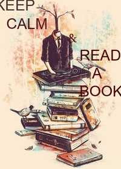

Magic books word
"The writer, while creating works, performs only part of the work, hoping that the reader will continue to participate in his mental activity."
Маленький книголюб
Перелік творів
Рик Янсі "5 Хвиля"
Рик Янсі "Безмежне море"
Рик Янсі "Остання зоря"
Джеймс Дешнер "Бігун у лабіринті. Той, що біжить лабіринтом"
Джеймс Дешнер "Випробування вогнем. Той, що біжить лабіринтом"
Джеймс Дешнер "Ліки від смерті. Той, що біжить лабіринтом"
Вероніка Рот "Нескорена. Дивергент"
Вероніка Рот "Бунтівниця. Інсургент"
Вероніка Рот "Віддана. Алігент"
Ив Престон "#Потерянные поколения. Книга 1"
Ив Престон "#Потерянные поколения. Книга 2"
Эл Ригби "Завтра нас похоронят"
Эли Фрей "Мой лучший враг"
Кристина Старк "Крылья"
Кристина Старк "Гончые Лилит"
Рейчел Уорд "Числа"
Джен Ле Карре "Такой же предатель, как мы"

Ольга Слоньовська "Дівчина на кулі"
Дженни Даунхем "Ты против меня"
Нора Робертс "Опасный след"
Эрик Ларссен "На пределе. Неделя без жалости к себе"
Самюэль Бьорк "Сова"
Маркус Сэйки "Одаренные. Земля Обетованная"
Маркус Сэйки "Одаренные. Лучший мир"
Крис Чибнелл, Эрин Келли "Убийство на пляже"
Джон Бойн "Мальчик в полосатой пижаме"
Майкл Бирн "Последний подарок"
Марк Леви "Похититель теней"
Стивен Кинг "Под куполом"
Игорь Вардунас, Никита Аверин "Хронос. Противостояние"
Эльчин Сафарли "Я вернусь..."
Ирина Волчок "Тихий омут"
Вадим Ефимов "Шесть писем мертвеца"